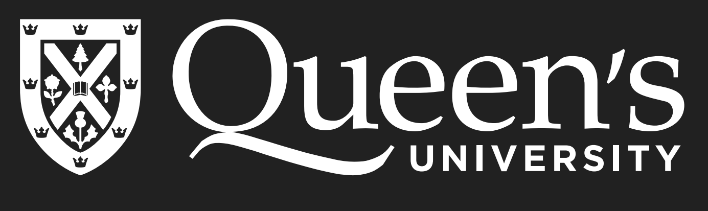

I’m a fourth-year Engineering Physics student at Queen’s, joining Prof. Michael Reimer’s group at IQC Waterloo this summer through an Undergraduate Research Award to work on nanowire quantum dots, and attending USEQIP (Undergraduate School on Experimental Quantum Information Processing). My undergraduate research with Prof. Bhavin Shastri has been on photonic Ising machines, alongside numerical work with Prof. Ivan Iorsh on correlation functions in periodically driven quantum spin chains.
The physics that excites me is what happens when light stops being a passive carrier, when strong coupling to matter turns photons into objects you can generate one at a time, tailor, and make interact. My research interests are in experimental quantum optics: single and entangled photon sources, cavity and waveguide QED, and photon-photon and photon-phonon interactions, across solid-state emitters, atomic systems, and the quantum optics of two-dimensional materials. I want to come out of grad school as an experimentalist with the theoretical depth to either uncover new phenomena in these systems or engineer new quantum devices from them.

01currently
02writing